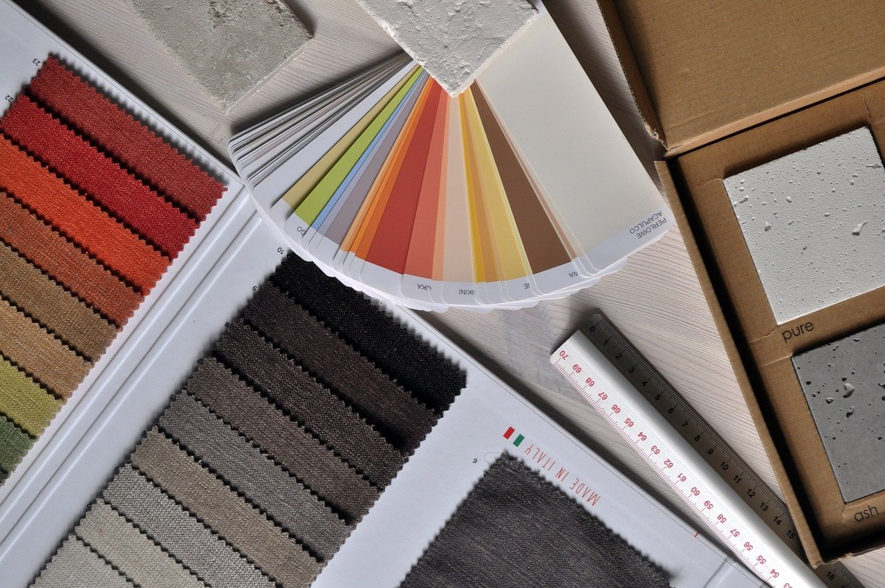

起
起
源
一開始只是興趣，但某一天，我把興趣變成一輩子的情趣。於2010年8月鼓起勇氣向公司遞出辭呈，並遠赴日本學習木工裝修，在他鄉打拼幾年後，決定回家開創自己的事業。人生短短幾年，享受在每一個當下是很重要的。時間真的過得很快,回首創業的起點仍感受得到沸騰，等不及再投入下一個計劃。
享受設計 打造好舍 是我們不變的初衷
本
質
秉持設計重點在於人本，工程重點在於品質，兩者相互做得到位，作品即能臻於完善的信念且堅持不繁複的初衷持續為設計實戰經驗累積更為厚實的履歷。
屢次承攬大小不拘的設計與工程計劃案皆抱持著建構空間是能夠闡述過去、現在以及未來的場所，督促空間能夠成為時間的見證者。